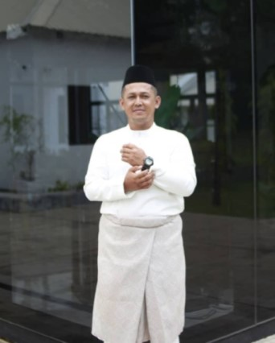

This is my second brother. My brother's name is Fitri Norfarhan bin Faizon. He was born on June 20, 1986 in Lambor Kanan, Perak. He is now 34 years old. He worked as a H11 Civil Assistant at the Manjung Municipal Council. He was married on October 29, 2020. He is a person who cares about our family. Since my father passed away, he has taken on the responsibility of being the head of the family. He sacrificed a lot for the family and always met our demands. He took care of our house in Bota, Perak while now my mother and I live in Putrajaya.
|